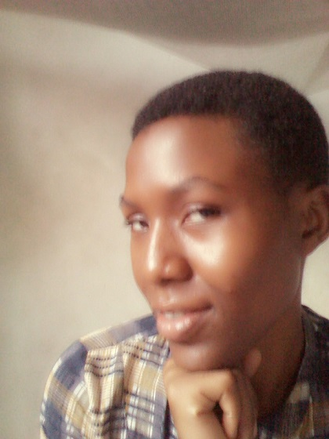

Starting with my name, i go by the name of Mexina M Daniel but most people find so hard to call me Mexina and they end up calling me Meck, and hey i got an a.k.a too, its Miel. Am a student of University of Dar es Salaam pursuing Bachelor of Science in Computer Science and i can say someone who is determined to be a good programmer in the future.
I live at a place called Yombo Vituka found in Temeke district, in Dar es Salaam, Am a Tanzania citizen born at Kigoma region, both of my parents are from Kigoma and am proud of being Tanzanian.
As someone who love and care about others, i like and enjoy being around the people i love, my family and friends, they make me be myself around them, but i got to admit am not good at making friends easily because am always not comfortable and free to the people who am not used to talk with, but still i like to have peace with everyone.